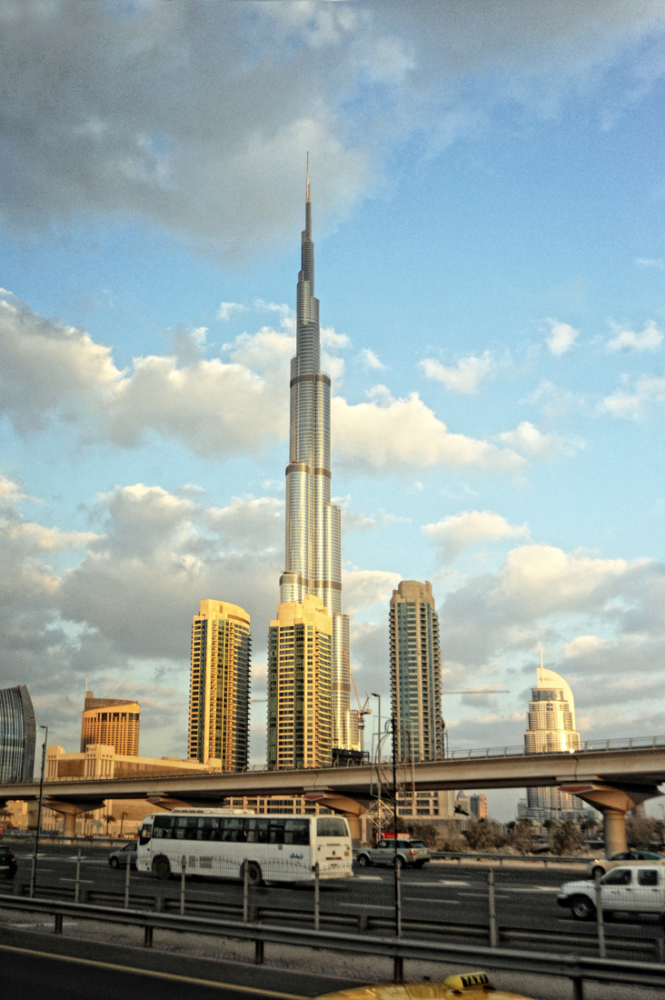
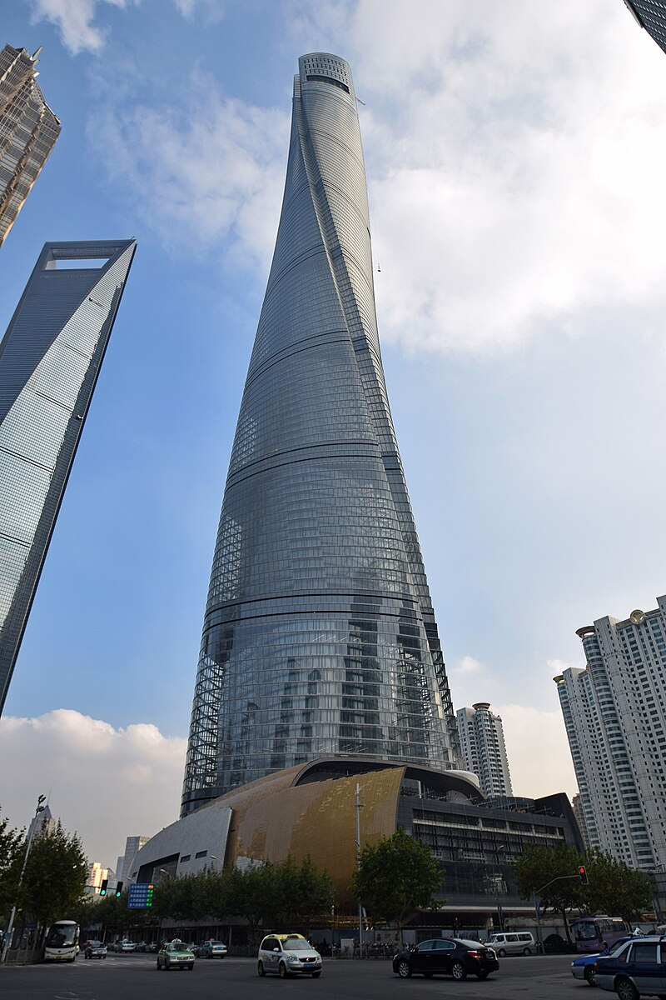
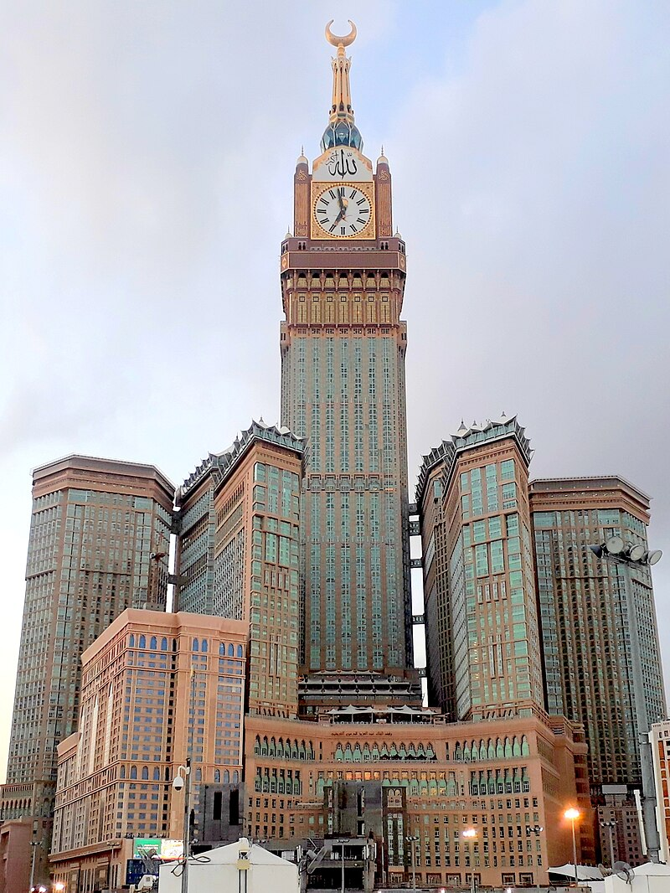
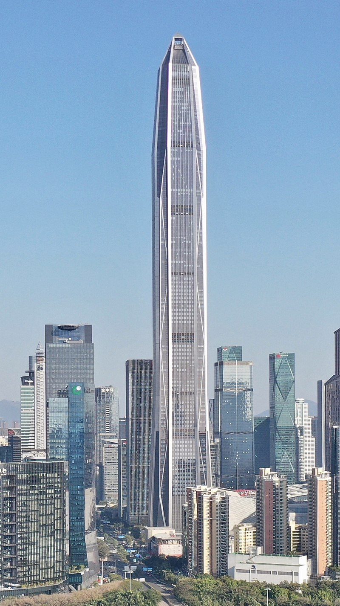

Trochę o gigantach
Odkryj najwspanialsze architektoniczne osiągnięcia ludzkości. Poniżej znajdziesz szczegółowe informacje o najwyższych budynkach świata, ich charakterystyce oraz historii powstania.
1. Burj Khalifa - Dubaj (ZEA)
Wysokość: 828 m
Liczba pięter: 163
Rok ukończenia: 2010
Burj Khalifa to najwyższy budynek świata, który dominuje nad panoramą Dubaju. Wieżowiec zawiera mieszkania, biura, hotele oraz obserwatorium. Jego budowa trwała 6 lat i wymagała zaangażowania tysięcy pracowników. Budynek jest połączony z nowoczesnym systemem zarządzania energią i klimatyzacją.
2. Merdeka 118 - Kuala Lumpur (Malezja)

Wysokość: 679 m
Liczba pięter: 118
Rok ukończenia: 2023
Merdeka 118 to drugi najwyższy budynek na świecie i największe osiągnięcie architektoniczne Malezji. Nowoczesna wieża łączy funkcje biurowe, hotelowe i handlowe. Budynek wyróżnia się zrównoważonym podejściem do projektowania, z systemami oszczędzającymi energię i zbierającymi deszczówkę.
3. Shanghai Tower - Szanghaj (Chiny)
Wysokość: 632 m
Liczba pięter: 128
Rok ukończenia: 2015
Shanghai Tower jest trzecim najwyższym budynkiem świata i symbolem nowoczesnego Szanghaju. Wieżowiec posiada unikalne obracające się spiralne profile, które zmniejszają opór wiatru. Zawiera biura, hotele, sklepy i obserwatorium. Budynek spełnia najwyższe normy bezpieczeństwa sejsmicznego i energetycznego.
4. Abraj Al-Bait Clock Tower - Mekka (Arabia Saudyjska)
Wysokość: 601 m
Liczba pięter: 120
Rok ukończenia: 2012
Wieża zegarowa Abraj Al-Bait to czwarty najwyższy budynek świata, znajdujący się w bezpośredniej bliskości Wielkiego Meczetu w Mekce. Budynek zawiera 4 ogromne tarcze zegarowe, które są widoczne z odległości do 25 km. Kompleks zapewnia mieszkania dla pielgrzymów i zawiera luksusowy hotel.
5. Ping An International Finance Centre - Shenzhen (Chiny)
Wysokość: 599 m
Liczba pięter: 115
Rok ukończenia: 2017
Ping An International Finance Centre to piąty najwyższy budynek świata, będący siedzibą grupy Ping An. Wieżowiec łączy biura, hotel i mall handlowy. Budynek wykorzystuje najnowszą technologię w zarządzaniu budynkiem inteligentnym oraz systemami bezpieczeństwa.
Inżynierskie wyzwania
Budowanie tak wysokich konstrukcji to ogromne wyzwanie inżynieryjne. Każdy z tych budynków musi być odporny na silne wiatry, trzęsienia ziemi i ekstremalne temperatury. Konstruktorzy używają zaawansowanych materiałów, takich jak stal wysokiej jakości i specjalne betony.
Systemy stabilizacji dynamicznej, widoczne szczególnie w Shanghai Tower i Burj Khalifa, pozwalają budynkom elastycznie reagować na siły zewnętrzne, zapewniając bezpieczeństwo mieszkańcom i pracownikom.
Zrównoważony rozwój
Nowoczesne wieżowce coraz bardziej skupiają się na zrównoważonym rozwoju. Merdeka 118 i Shanghai Tower zostały zaprojektowane z myślą o minimalizacji zużycia energii. Wykorzystują panele słoneczne, systemy gromadzenia deszczówki i zaawansowaną klimatyzację.
Takie podejście nie tylko zmniejsza koszty operacyjne, ale również przyczynia się do ochrony środowiska dla przyszłych pokoleń.